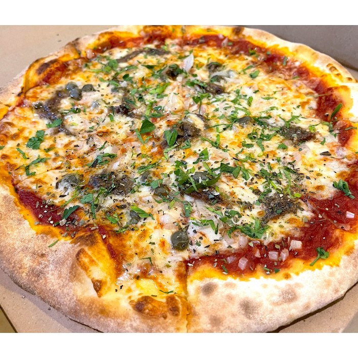
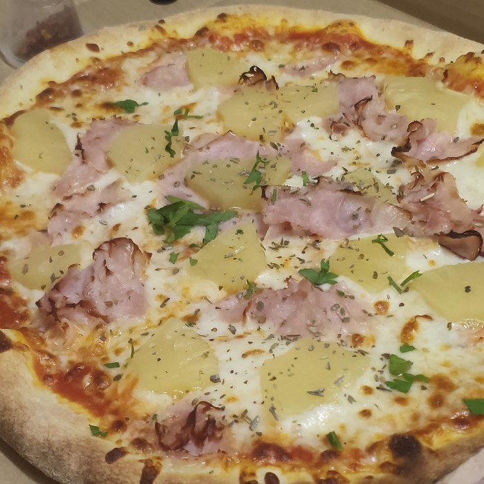
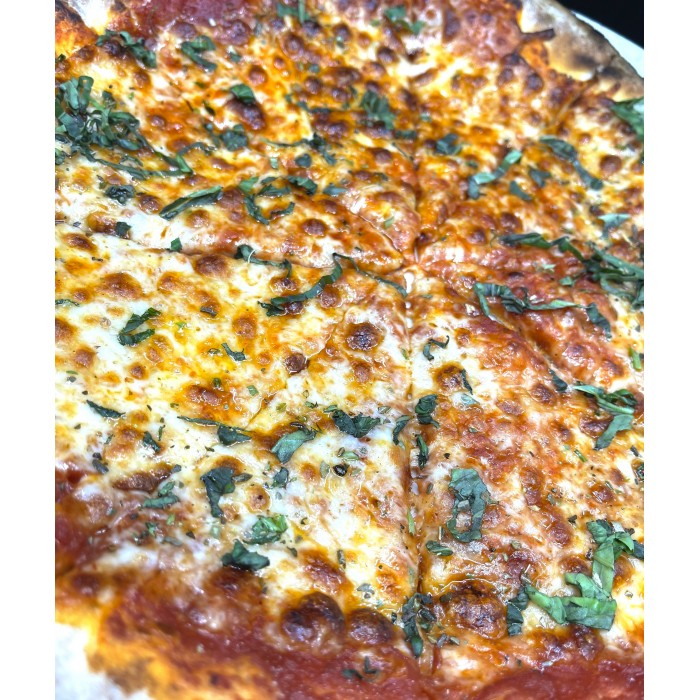

Menu

Napoletana
$22.20

Frutti Di Mare
$29.40

Americana
$22.20

Margherita
$19.90
Welcome to Bruno's Bistrot! We served delicious Italian & French food & even weekend brunch! Bruno started Bruno’s Restaurant over 10 years ago because he sees a lack of authentic Italian food in our Singapore market. That’s why after his journey to many countries as a Chef learning and exchanging experiences, he came back to our small little sunny island Singapore to settle down. Having to love Singapore so much, he became a citizen 20 over years ago and has already localized. And we are just happy that he chose Singapore making us part of his family in this business.
$22.20
$29.40
$22.20
$19.90